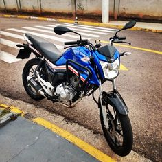
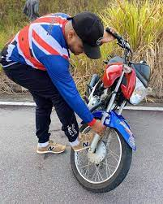
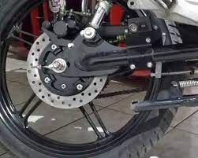
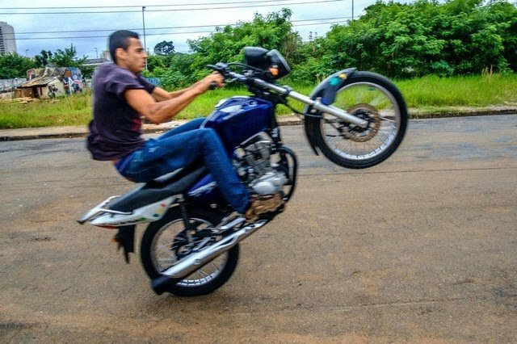
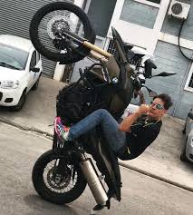

passos para o grau
tenha uma moto

OBS:NUNCA SE ESQUEÇA DE ALIVIAR AS PINÇAS
.
PASSO 1 alivie as pinças

PASSO 2 REGULE O FREIO TRASEIRO

PASSO 3 desligue o abs
PASSO 4 começe com o grau basico e leve ate a moto começar a subir

PASSO 5 caso a moto for tombar aperte o freio traseiro e ponha a motoca para dormir

a">